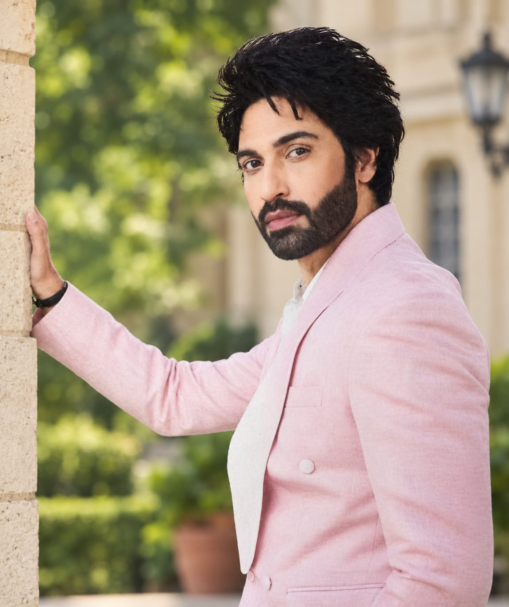

.jpg)
THE TIME OF INDIA
INCLUSIVE OF DELHI TIMES (CIRCULATED ONLY IN DELHI NCR) *Applicable only on monthly purchase(IN DELHI NCR)
Australia will stop foreign students from bringing partners and children to accompany them while they study, and tighten working holiday visa ruies,home minister Tony Burke says,P 16
Raphinha scores a hat-trick as Barcelona earn yet another big win in La Liga, routing Santander 7-2 for their best-ever Start to a season,P 24
FLIPPED iT
THE TIME OF INDIA
A 60-SECOND DAILY WORD CHALLENGE.
crack the word, build your streak, share your score. Top scorers get featured in TOI
overall as india crush Afghanistan by 127 runs in third T201 to sweep series 3-0 Abhishek's ton was fastAbhishek Sharma records fastest-ever century (30 balls) for an Indian and third quickest er in T201 between full Test-playing nations,P24
Such Decisions are not taken overnight: Vijayendra Kumeria on separation
Neha Maheshwri
Although remours about his sepration from Preeti Bhatia
were rife, Vijayendra Kumeria chose to stay silent,
as he was still trying to come to terms with the development.
He has now decided to address the speculation, confirming that
they are divorced. Vijayendra says, all this while, I was not ready to talk
about it, as I was trying to finger out and accept things that were
happening in my personal and maybe I didn't know how to handle that
situation. but with time,I realised that instead of people making
assumption, it's, better to clear the air.
Their decision to part ways came
after years of trying to work came through their defference.Having begun living
separately in 2022, the couple got their divorce decree in 2025.for years to save the
relationship.But I think It's better for Kimaya
as well to experience love from both parents separately instead of growing
up in an unhappy environment.
It was a difficult decision because a child was involved, and why Preeti and I fried for years to save the relationship, But it's better for Kimaya to experience love from both parents separated instead of growing up in an unhappy envirment
didn't work out and we separated in 2022. It was a mutual decision.Their decision to part ways came after years of trying to work came through their defference.Having begun living separately in 2022, the couple got their divorce decree in 2025.

for years to save the relationship.But I think It's better for Kimaya
as well to experience love from both parents separately instead of growing
up in an unhappy environment. Like any parenst, We want the best for her.
For now, work remains Vijayendra's focus Last seen in Juhi Mui.
he wants to explore different formats and take him.But it's better for Kimaya to experience
love from both parents
separated instead of growing up in an unhappy envirment
on interseted projects that allow me to satiate my creative hunger as an actor. I am open to all mediums. Of course,I will now try the OTT space because I have managed to get the contact of the right casting directors, whom I have been approaching. Iam also open to TV .work remains Vijayendra's focus Last seen in Juhi Mui. heBut it's better for Kimaya to experience love from both parents separated instead of growing up in an unhappy envirment